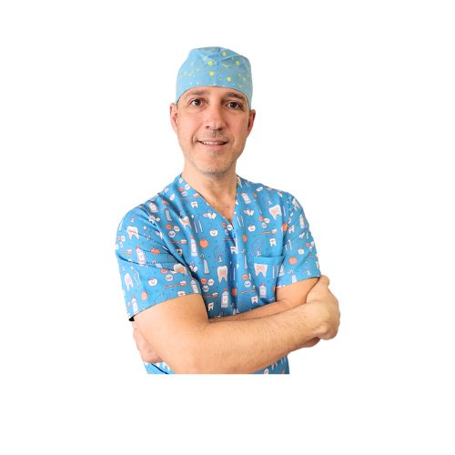
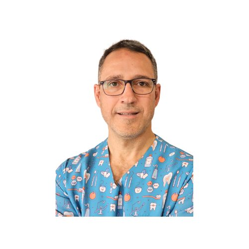
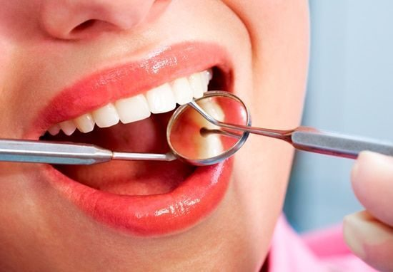

“Me han dicho que hay que sacar la muela y no lo tengo claro.”
En Isaac Díaz: una endodoncia bien hecha salva muchos dientes que otros dan por perdidos. Te damos una segunda opinión gratis, con tus radiografías delante.
Más de 20 años especializado en endodoncia, implantes y encías, en el corazón de Moncloa. Sin cambios de doctor, sin comerciales, sin prisas.

Primera visita0 €Seamos sinceros
Son las tres razones por las que más pacientes llegan a la consulta del Dr. Díaz.
“Me han dicho que hay que sacar la muela y no lo tengo claro.”
En Isaac Díaz: una endodoncia bien hecha salva muchos dientes que otros dan por perdidos. Te damos una segunda opinión gratis, con tus radiografías delante.
“Cada vez que voy al dentista me atiende alguien distinto.”
En Isaac Díaz: te atiende siempre el Dr. Isaac Díaz, desde el diagnóstico hasta la última revisión. Él conoce tu caso.
“Me da miedo que me cobren de más.”
En Isaac Díaz: te damos el plan y el precio por escrito antes de empezar, con las opciones ordenadas por prioridad.
La oferta de bienvenida
Si te duele, si te han propuesto una extracción o si llevas tiempo sin revisarte: en una sola cita sabrás qué tiene arreglo, qué no y cuánto cuesta. Antes de gastar un euro.
El Dr. Díaz reserva 8 plazas gratis en este mes
Tu tranquilidad, por escrito
Solo proponemos una extracción cuando de verdad no hay alternativa. Y te enseñamos por qué en la radiografía.
El Dr. Isaac Díaz te atiende en todas tus citas. Sin rotaciones y sin sorpresas.
El presupuesto que firmas es el que pagas. Si surge algo imprevisto, el sobrecoste es nuestro.

Por qué existe esta clínica
“Una sonrisa enriquece a quien la recibe sin empobrecer a quien la ofrece.”Dr. Isaac Díaz · Moncloa, Madrid
La clínica nació en Chamberí, en la calle Magallanes, y creció hasta su sede actual en Moncloa. La filosofía es la misma desde el primer día: diagnóstico detallado, técnica precisa y tiempo para explicar cada paso.
Pedir cita con el Dr. Díaz →Tratamientos
Odontología integral con planificación digital. Elige lo que te preocupa y lo vemos en tu primera visita.

Tratamiento de conductos con técnica actual para eliminar el dolor y conservar tu diente natural.
Quiero valorar mi caso →
Reposición segura con planificación 3D: sabemos dónde irá el implante antes de colocarlo.
Quiero valorar mi caso →Tratamos la enfermedad de las encías para que tus dientes sigan firmes muchos años.
Reservar valoración →Forma, color y armonía con resultados naturales: blanqueamiento, carillas y composite.
Reservar valoración →Escríbenos por WhatsApp y te buscamos hueco lo antes posible.
Llamar ahora →Limpieza profesional y revisión completa. La prevención es lo más barato.
Reservar valoración →Quién te va a atender
En la Clínica Dental Isaac Díaz no hay rotaciones: el Dr. Díaz te diagnostica, te trata y te revisa.

Endodoncia · Implantes · Periodoncia
Práctica exclusiva y personalizada
Así de fácil
Elige día y hora online o llámanos. Te confirmamos la cita por teléfono.
El Dr. Díaz te explora, revisa tus radiografías contigo y te dice con claridad qué diente se puede salvar.
Te llevas tu plan por escrito con el precio total y la cuota mensual. Sin presión y sin letra pequeña.


La clínica
Una consulta tranquila y bien equipada, cómoda para familias, profesionales y estudiantes de la zona universitaria.
Financiación
Que el dinero no sea la razón para posponer tu salud. Calcula aquí cuánto pagarías al mes y en tu primera visita te damos la cifra exacta.
Financiación sujeta a aprobación de la entidad financiera. Cálculo orientativo sin intereses.
Opiniones
Lee lo que opinan de nosotros en Google antes de venir.
Preguntas frecuentes
¿Tienes otra duda? Llámanos al 638 568 035 y te la resolvemos en un minuto.
No hay trampa. Preferimos que nos conozcas sin riesgo: si te gusta cómo trabajamos, te quedarás con nosotros muchos años. Incluye exploración completa con el Dr. Díaz, radiografías de diagnóstico y un plan por escrito con precio cerrado.
Sí, y es gratis. Trae tu presupuesto y, si las tienes, tus radiografías. Te diremos con franqueza si coincide con lo que necesitas.
No. Te llevas tu plan y tu presupuesto por escrito y decides tú, cuando quieras. Sin llamadas insistentes.
Sí. Los estudiantes con carné universitario en vigor tienen un 10 % en su primer tratamiento.
Sí. Ofrecemos financiación, sujeta a aprobación. En la primera visita te calculamos tu cuota exacta.
Atendemos con cita previa. Puedes elegir día y hora directamente en esta web y te llamamos para confirmarla.
Reserva online · 1 minuto
El Dr. Díaz reserva 8 plazas gratis en este mes
Horario: con cita previa
¿Prefieres llamar? 638 568 035 · WhatsApp 638 568 035
Horario online
Horario actualizado en tiempo real (hora de Madrid). Y aunque estemos cerrados, puedes reservar tu cita online las 24 horas: te la confirmamos en cuanto abramos.
Festivos nacionales cerrado. Citas con cita previa.
Dónde estamos
Antes de irte
Primera visita completa con el Dr. Isaac Díaz por 0 €. Solo quedan 8 plazas para este mes.
Sí, quiero mi plaza